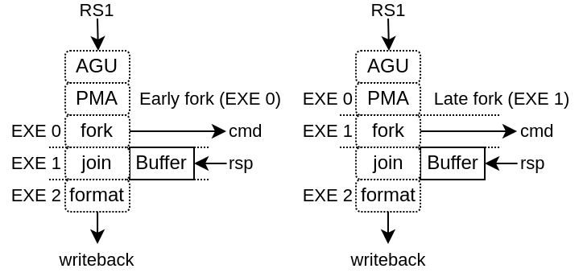

Load Store Unit (LSU)
VexiiRiscv has 2 implementations of LSU :
LsuCachelessPlugin for microcontrollers, which doesn’t implement any cache
LsuPlugin / LsuL1Plugin which can work together to implement load and store through an L1 cache
Without L1
Implemented by the LsuCachelessPlugin, it should be noted that to reach good frequencies on FPGA SoC, forking the memory request at execute stage 1 seems to provide the best results (instead of execute stage 0), as it relax the AGU timings as well as the PMA (Physical Memory Attributes) checks.
With L1
This configuration supports :
N ways (limited to 4 KB per way if the MMU is enabled)
Non-blocking design, able to handle multiple cache line refill and writeback
Hardware and software prefetching (RPT design)
This LSU implementation is partitioned between 2 plugins :
The LsuPlugin :
Implement AGU (Address Generation Unit)
Arbitrate all the different sources of memory request (AGU, store queue, prefetch, MMU refill)
Provide the memory request to the LsuL1Plugin
Bind the MMU translation port
Handle the exceptions and hazard recovery
Handle the atomic operations (ALU + locking of the given cache line)
Handle IO memory accesses
Implement the store queue to handle store misses in a non-blocking way
Feed the hardware prefetcher with load/store execution traces
The LsuL1Plugin :
Implement the L1 tags and data storage
Implement the cache line refill and writeback slots (non-blocking)
Implement the store to load bypasses
Implement the memory coherency interface
Is integrated in the execute pipeline (to save area and improve timings)
For multiple reasons (ease of implementation, FMax, hardware usage), VexiiRiscv LSU can hit hazards situations :
Cache miss, MMU miss
Refill / Writeback aliasing (4KB)
Unread data bank during load (ex : load during data bank refill)
Load which hit the store queue
Store miss while the store queue is full
…
In those situation, the LsuPlugin will trigger an “hardware trap” which will flush the pipeline and reschedule the failed instruction to the fetch unit.
Memory coherency
Memory coherency (L1) with other memory agents (CPU, DMA, ..) is supported though a MESI implementation which can be bridged to a tilelink memory bus.
So, the L1 cache will have the following stream interfaces :
read_cmd : To send memory block acquire requests (invalid/shared -> shared/exclusive)
read_rsp : For responses of the above requests
read_ack : To send acquire requests completion
write_cmd : To send release a memory block permission (shared/exclusive -> invalid)
write_rsp : For responses of the above requests
probe_cmd : To receive probe requests (toInvalid/toShared/toUnique)
probe_rsp : to send responses from the above requests (isInvalid/isShared/isUnique)
PICTURE
Prefetching
Currently there is two implementation of prefetching
PrefetchNextLinePlugin : As its name indicates, on each cache miss it will prefetch the next cache line
PrefetchRptPlugin : Enable prefetching for instruction which have a constant stride between accesses
PrefetchRptPlugin
This prefetcher is capable of recognizing instructions which have a constant stride between their own previous accesses in order to prefetch multiple strides ahead.
Will learn memory accesses patterns from the LsuPlugin traces
Patterns need to have a constant stride in order to be recognized
By default, can keep of the access patterns up to 128 instructions (1 way * 128 sets, pc indexed)
This can improve performance dramatically (for some use cases). For instance, on a 100 MHz SoC in a FPGA, equipped of a 16x800 MT/s DDR3, the load bandwidth went from 112 MB/s to 449 MB/s. (sequential load)
Here is a description of the table fields :
“Tag” : Allows to get a better idea if the given instruction (PC) is the one owning the table entry by comparing more PC’s MSB bits. An entry is “owned” by an instruction if its tag match the given instruction PC’s msb bits.
“Address” : Previous virtual address generated by the instruction
“stride” : Number of bytes expected between memory accesses
“Score” : Allows to know if the given entry is useful or not. Each time the instruction is keeping the same stride, the score increase, else it decrease. If another instruction (with another tag) want to use an entry, the score field has to be low enough.
“Advance” : Allows to keep track how far the prefetching for the given instruction already went. This field is cleared when a entry switch to a new instruction
“Missed” : This field was added in order to reduce the spam of redundant prefetch request which were happening for load/store intensive code. For instance, for a deeply unrolled memory clear loop will generate (x16), as each store instruction PC will be tracked individually, and as each execution of a given instruction will stride over a full cache line, this will generate one hardware prefetch request on each store instruction every time, spamming the LSU pipeline with redundant requests and reducing overall performances.
This “missed” field works as following :
It is cleared when a stride disruption happens (ex new memcopy execution)
It is set on cache miss (set win over clear)
An instruction will only trigger a prefetch if it miss or if its “missed” field is already set.
For example, in a hardware simulation test (RV64, 20 cycles memory latency, 16xload loop), this addition increased the memory read memory bandwidth from 3.6 bytes/cycle to 6.8 bytes per cycle.
Note that if you want to take full advantage of this prefetcher, you need to have enough hardware refill/writeback slots in the LsuL1Plugin.
Also, prefetch which fail (ex : because of hazards in L1) aren’t replayed.
The prefetcher can be turned off by setting the CSR 0x7FF bit 1.